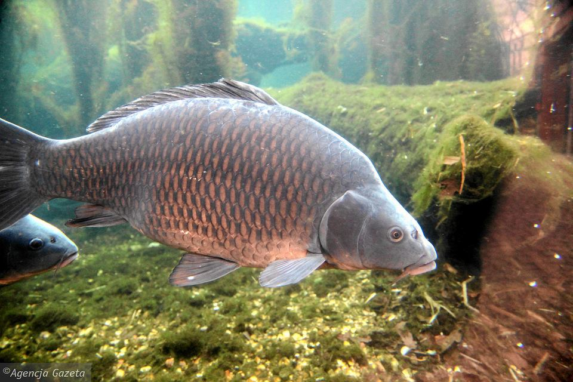
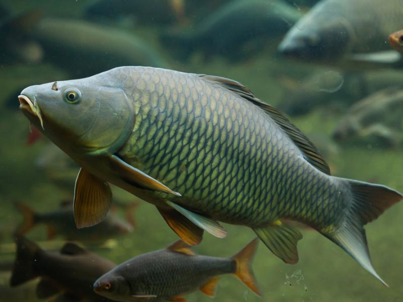

Karp
(Cyprinus carpio) to ryba słodkowodna z rodziny karpiowatych,
 pierwsza udomowiona i najważniejszy gatunek hodowlany w naszym kraju. Zęby gardłowe występują w
trzech szeregach.
Występują dwie odmiany karpia. Pierwsza to dziki karp - sazan, a druga to karp udomowiony. Obie
odmiany mają dwa dłuższe i dwa krótsze wąsiki w okolicy kącików wargi górnej, długą, nieco
zaokrągloną płetwę grzbietową, słabo wciętą płetwę ogonową, krótką płetwę odbytową. Ciało jest
bocznie spłaszczone.
pierwsza udomowiona i najważniejszy gatunek hodowlany w naszym kraju. Zęby gardłowe występują w
trzech szeregach.
Występują dwie odmiany karpia. Pierwsza to dziki karp - sazan, a druga to karp udomowiony. Obie
odmiany mają dwa dłuższe i dwa krótsze wąsiki w okolicy kącików wargi górnej, długą, nieco
zaokrągloną płetwę grzbietową, słabo wciętą płetwę ogonową, krótką płetwę odbytową. Ciało jest
bocznie spłaszczone.
Kształt ciała sazana jest nieco wydłużony, walcowaty, niezbyt wygrzbiecony, z mniejszą głową, małym otworem gębowym. Pokryty jest jednolicie grubą łuską. Ma jaśniejsze, złotawe boki i ciemny grzbiet.
Karp udomowiony jest mocno wygrzbiecony. Wyróżniamy cztery odmiany karpia udomowionego, spotykane w Polsce:
- łuskowy (pełnołuski) - ułożenie i wygląd łusek jest podobny do sazana;
- liniowy - na linii bocznej ma rząd dużych łusek lustrzanek;
- lustrzeń, karp królewski, karp galicyjski - ma 1 lub 3 rzędach łusek lustrzanych po bokach ciała lub rozrzuconych;
- bezłuski, golec - nie posiada łusek.
Ponadto w Polsce mamy pięć odmian barwnych: złotą, szarą, żółto-białą, brązową i niebieską.
Karp koi
Karp koi jest hodowlaną, ozdobną i udomowioną odmianą karpia. Jego hodowlę rozpoczęto w XIX wieku w Japonii. Dziś znamy wiele odmian barwnych (ponad 100). Ubarwienie zwykle pomarańczowe, białe,czarne, w plamy. Kilka zdjęć znajduje się w naszej galerii.
Występowanie i środowisko
 Karp jest u nas obcym gatunkiem, który nie może się u nas rozmnażać. W naturze występuje w południowej i południowo-wschodniej części Europy oraz we wschodniej części Azji. Zamieszkuje wolno płynące rzeki o mulistym dnie i bogatej roślinności wodnej oraz zbiorniki wody stojącej. Zamieszkuje też laguny przymorskie. Znosi zasolenie wody do 2%.
Tryb życia i zachowanie
To ryba denna, przeszukująca w poszukiwaniu pokarmu muliste podłoże. Jest ciepłolubna. Lubi wodę o temperaturze 18-30 °C. Na żer wychodzi o zmroku.
Pożywienie
Zjada larwy owadów, skąposzczety, ślimaki. Zjada też pokarm pochodzenia roślinnego. Ryba w charakterystyczny sposób pobiera pokarm. Wsysa muł wraz z pokarmem, wypluwa i wchłania ponownie. Ponieważ muł opada wolniej, ryba wybiera właściwy pokarm. W hodowli może być karmiony paszami i nasionami roślin strączkowych.
Rozmnażanie
W Polsce karp w naturze nie jest zdolny do rozrodu! Tarło odbywa się wyłącznie  w specjalnych stawach tarliskowych lub w wylęgarniach. W normalnych warunkach karp potrzebuje do rozrodu wody o temperaturze 18-20 °C. Tarło odbywa się od maja do czerwca na zalanych łąkach nad rzekami. Ikra przyczepia sie do traw. Z jaj małe larwy wykluwają się już po 3-5 dniach, po miesiącu stają się osobnikami młodocianymi. Po 3-4 latach staje się już dojrzały płciowo, w hodowli po niecałym roku. W jednym miocie może się znaleźć od 180 tysięcy do 1 miliona (maksymalnie 1,5 mln) jaj.
Ciekawostki
Karp jest najważniejszą rybą hodowlaną w Polsce. To pierwszy udomowiony gatunek ryby. Jego hodowla rozpoczęła się prawdopodobnie w V w. p.n.e. w Chinach. Rzymianie sto lat później również go hodowali. Ważną rolę w hodowli karpia odegrał zakon cystersów, który zakładał gospodarstwa rybackie. Do Polski karp trafił w XIII w. Obecnie stanowi 50% połowu ryb słodkowodnych w Polsce. Sazana używa się do zarybiania rzek.
Okres ochronny: nie ma
Wymiar ochronny:do 30 cm (nie dotyczy rzek)
Dobowy limit połowu: 3 szt. razem z boleniem, lipieniem, pstrągiem potokowym, amurem, sandaczem, szczupakiem, brzaną
Rekord Polski: 34,5 kg